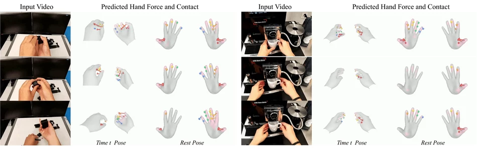
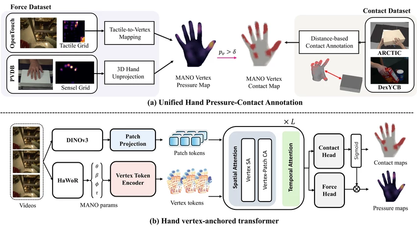
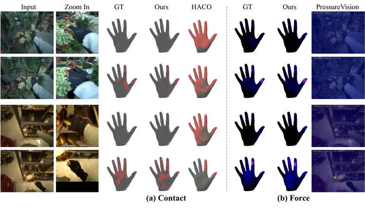
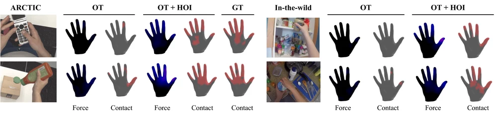
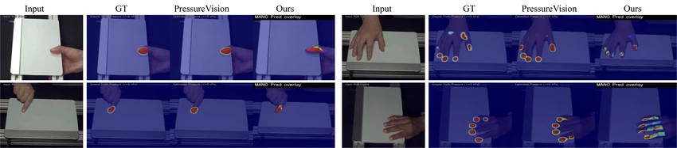

Preprint, 2026
1Seoul National University 2RLWRLD

TL;DR HOPE predicts per-vertex contact and pressure on the MANO hand mesh from monocular RGB video — supervised mostly on gloved hands, yet transferring to bare-hand egocentric and in-the-wild video through heterogeneous force–contact supervision.
Estimating physical pressure from vision is essential for understanding contact-rich hand-object interaction. However, prior vision-based pressure estimation methods are largely limited to planar surfaces and single image input, making them difficult to apply to dynamic hand-object interaction with diverse objects. We instead formulate pressure estimation as a hand-centric video prediction problem with monocular video as input. This formulation predicts temporally evolving per-vertex normal pressure and contact directly on the hand mesh, yielding a unified output space independent of object shape and sensor layout.
Building on this formulation, we propose HOPE, a framework with two key components. First, we lift tactile-glove pressure, planar-sensor pressure, and distance-based hand-object contact annotations into a shared hand vertex space, allowing bare-hand contact data to regularize pressure learning where metric labels are unavailable. Second, we introduce a vertex-anchored video transformer that treats each vertex as a persistent token, aggregates visual features and hand pose over time, and uses a contact-gated pressure head to enforce that pressure vanishes without contact.
Experiments on OpenTouch, PressureVisionDB, and hand-object contact benchmarks demonstrate that HOPE supports a common hand-centric representation across object-pressure, surface-pressure, and contact-supervised HOI settings. Despite using metric pressure supervision primarily from gloved-hand videos, HOPE generalizes to bare-hand egocentric and in-the-wild videos, producing joint contact and pressure predictions beyond the scope of contact-only or planar-pressure baselines.
Monocular RGB in, per-vertex force and contact out. No tactile glove, no instrumented surface, no known object — and no ground truth to fit to. Arrow length is the aggregate force of each finger region; the same predictions are shown as a per-vertex pressure field and a contact mask.
Swipe the panel sideways to compare all four views.
Clips are held-out egocentric and in-the-wild videos; hand pose comes from an off-the-shelf reconstructor.
Each hand is predicted separately, the left one by mirroring the video through the same right-hand model.
One timeline, three views of the same output: the input frame, the hand mesh carrying the per-vertex field, and the force aggregated over hand regions. Drag the hand to orbit it, drag the plot to scrub.
Loading force data…
Aggregated forcesum of predicted vertex-level force
Pressure and contact are predicted as per-vertex fields on the MANO mesh. This shared output space is what allows heterogeneous supervision — two sensor-specific pressure sources and contact-only HOI data — to train a single model.

A single annotation space, shared across sensors and unifying pressure with contact. Tactile-glove taxels and planar-sensor readings are lifted onto MANO vertices on a common scale; thresholding that pressure yields contact, which joins distance-based contact from hand-object data.
VertexFormer learns the mapping between hand geometry and image evidence. Vertex self-attention relates vertices to one another, while vertex-to-patch cross-attention reads the full patch grid. Finally, temporal attention learns how each vertex evolves over time — pre-load, load, release.
The pressure head is gated by the contact head, p̂ = ĉ ⊙ p̃, building the physical prior that pressure vanishes without contact into the architecture rather than leaving it to be learned. This is what makes contact-only supervision pay off for pressure: those labels reach vertices no force sensor ever covered.
Evaluated across three settings that no prior method covers jointly: hand-object pressure with a wearable tactile glove, hand-surface pressure on an instrumented plane, and bare-hand contact.
Hand-object pressure
Our main target setting. The gap over baselines is largest at the vertex level: PressureVision predicts a 2D planar map and cannot transfer to mesh vertices, while HACO reaches high recall but over-predicts contact regions on gloved hands.

| Frame-level contact | Vertex-level contact | Vertex-level force | ||||||
|---|---|---|---|---|---|---|---|---|
| Method | F1 | P | R | F1 | P | R | MAE (kPa) | RMSE (kPa) |
| PressureVision | 0.610 | 0.725 | 0.527 | 0.013 | 0.213 | 0.007 | 1.93 (8.03 / 0.14) | 6.19 (12.94 / 0.59) |
| PressureVision++ | 0.113 | 0.744 | 0.061 | 0.0013 | 0.386 | 0.001 | 1.92 (8.04 / 0.12) | 6.20 (12.95 / 0.60) |
| HACO | 0.835 | 0.720 | 0.994 | 0.361 | 0.256 | 0.611 | – | – |
| HOPE (ours) | 0.874 | 0.817 | 0.940 | 0.660 | 0.647 | 0.673 | 1.808 (5.84 / 0.61) | 4.998 (10.13 / 1.39) |
Generalization
Pressure supervision comes almost entirely from gloved hands. Adding contact-only HOI data costs essentially nothing in-domain but takes bare-hand vertex-level contact on ARCTIC from 0.069 to 0.498 — a 7× improvement, and the reason HOPE transfers to the in-the-wild clips above.

| Training data | OpenTouch | PVDB | ARCTIC (bare hand) | ||||||
|---|---|---|---|---|---|---|---|---|---|
| OT | PV | HOI | Frame F1 | Vertex F1 | MAE | Frame F1 | MAE | Frame F1 | Vertex F1 |
| ✓ | – | – | 0.871 | 0.657 | 1.840 | 0.725 | 0.822 | 0.835 | 0.137 |
| ✓ | ✓ | – | 0.878 | 0.672 | 1.841 | 0.908 | 0.265 | 0.765 | 0.069 |
| ✓ | ✓ | ✓ | 0.876 | 0.671 | 1.866 | 0.892 | 0.285 | 0.947 | 0.498 |
The same vertex-space model is competitive on frame-level contact and achieves the lowest vertex-level force errors, despite predicting in a hand-centric space rather than the sensor's native 2D image space. PressureVision keeps an advantage on pixel-level IoU because projecting mesh vertices back to the pad introduces hand-reconstruction error that planar methods avoid.

| Frame-level contact | Pixel-level IoU | Vertex-level force | |||||
|---|---|---|---|---|---|---|---|
| Method | F1 | P | R | Contact | Volume | MAE (kPa) | RMSE (kPa) |
| PressureVision | 0.939 | 0.977 | 0.904 | 0.547 | 0.411 | 0.471 | 3.726 |
| PressureVision++ | 0.248 | 0.963 | 0.143 | 0.022 | 0.021 | 0.248 | 3.025 |
| HOPE (ours) | 0.905 | 0.891 | 0.920 | 0.328 | 0.218 | 0.449 | 2.314 |
@article{jeon2026hope,
title = {HOPE: Hand-Object Pressure Estimation from Monocular Videos},
author = {Jeon, Subin and Kim, Byungjun and Joo, Hanbyul},
journal = {arXiv preprint arXiv:2608.06192},
year = {2026}
}